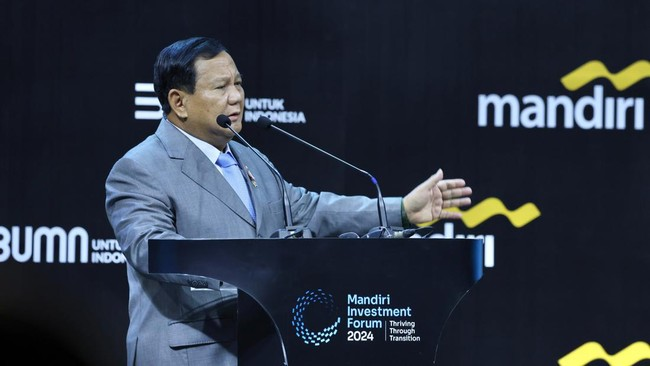

Presiden 2024 Prabowo adalah Jendral
CNN IndonesiaKamis, 15 Feb 2024
menjadi kandidat terkuat sebagai Presiden Indonesia berikutnya lantaran unggul berdasarkan hitung cepat (quick count) Pilpres 2024. Bahkan Litbang Kompas dan LSI, selaku lembaga yang melakukan quick count, sudah memprediksi Prabowo-Gibran bakal memenangkan satu putaran. Akan tetapi, rekapitulasi berjenjang oleh KPU yang dijadikan patokan dalam menetapkan pemenang Pilpres 2024. KPU punya waktu maksimal hingga 20 Maret mendatang.
menjadi kandidat terkuat sebagai Presiden Indonesia berikutnya lantaran unggul berdasarkan hitung cepat (quick count) Pilpres 2024.Bahkan Litbang Kompas dan LSI, selaku lembaga yang melakukan quick count, sudah memprediksi Prabowo-Gibran bakal memenangkan satu putaran.Akan tetapi, rekapitulasi berjenjang oleh KPU yang dijadikan patokan dalam menetapkan pemenang Pilpres 2024. KPU punya waktu maksimal hingga 20 Maret mendatang. Seiring berjalannya waktu, kode 08 tidak lepas dari sosok Prabowo. Bahkan setelah tidak aktif di Satgultor-81, kode 08 masih terasosiasi dengannya.
Prabowo lalu menjadi Komandan Jenderal Kopassus ke-15 periode 1995 hingga 1998. Dia menggantikan Subagyo HS. Selama menjadi Danjen Kopassus, Kode 08 masih melekat sebagai identitasnya.Karier Prabowo terus berlanjut di politik usai pensiun dari TNI dengan pangkat terakhir Letnan Jenderal bintang tiga. Alih-alih hilang atau luntur, kode 08 tetap dipakai oleh sebagian orang hingga diketahui banyak orang.Menurut mantan perwira Kopassus itu, Prabowo pun tidak pernah keberatan jika masih diidentikkan dengan kode 08 hingga saat ini.
Baca Selengkapnya...